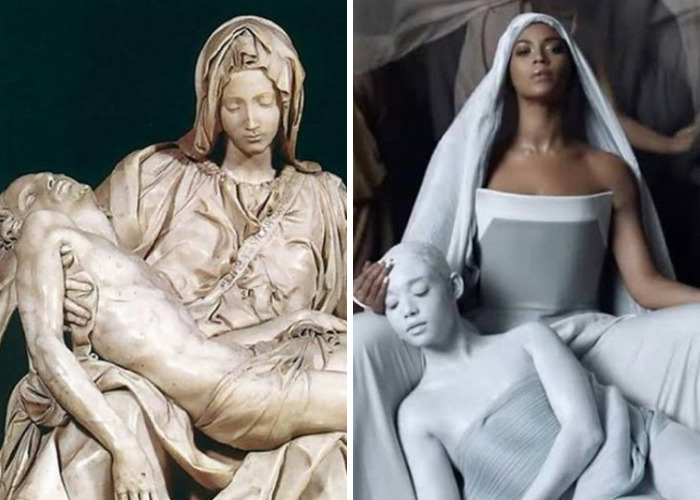
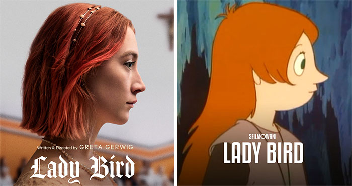

Sometimes we want to forget a film the second we walk out of the movie theatre, but sometimes we desire to get its copy and rewatch it again, and again, and again. Maybe the acting is captivating, maybe the cinematography is...
There are thousands of beautiful models on Instagram, but Shudu Gram is one of the kind. Cameron-James Wilson is a 28-year-old self-taught British photographer who is the man behind the stunning dark-skinned model. He created Shudu after teaching himself 3D, using online...
Since the beginning of the 14th century, when the Renaissance movement swept the continent and marked the beginning of the Modern Age, Europe has proven to be a stronghold of fine arts, cultural heritage, humanism, science and aesthetics. Today, the world...
I'm a film blogger living in Warsaw, Poland. Last year I recreated Oscar-Nominated movies with Winnie The Pooh. This time I did the same but with Moomins.